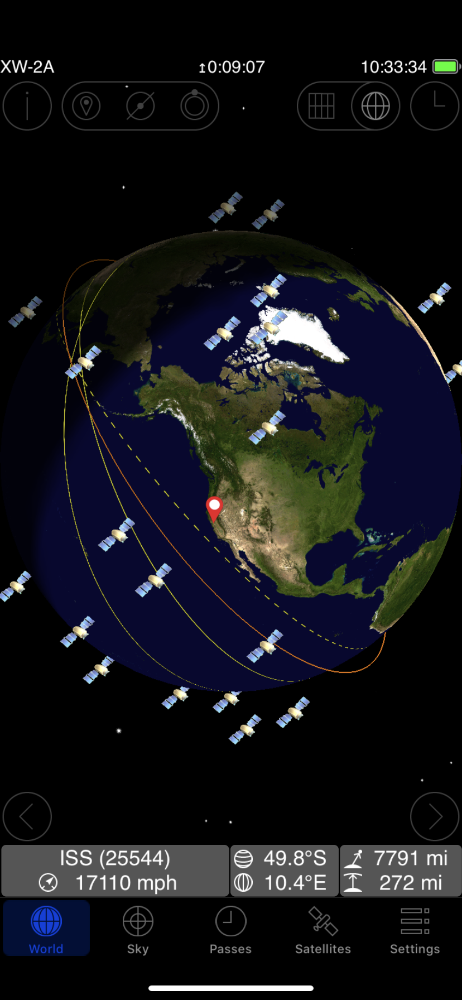
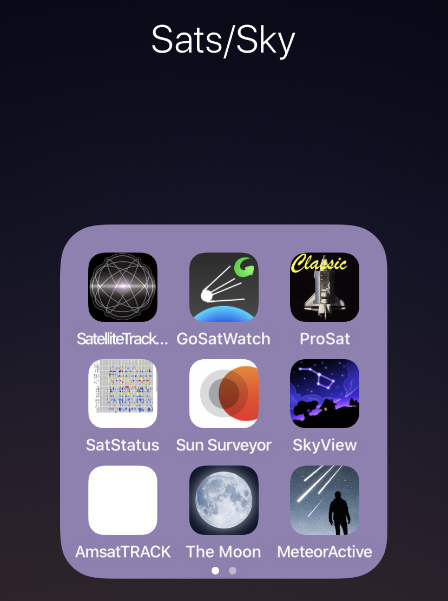

 
My iP folder.. Always ready for eme,hams,sats... 73,n6spp
~via iP11 On Sep 2, 2020, at 10:17, roger cunningham via Chat <chat@ncdxc.org> wrote:
So disappointed that my app ISS Detector didn’t give me the heads up! I ran out and tried an APRS packet but looks like it didn’t work. Guess I won’t rely on that app for future notifications😡 73 de Roger KC2YOT On Wed, Sep 2, 2020 at 10:01 AM Paul N6PSE via Chat < chat@ncdxc.org> wrote: Yes, the pass was brief but the signals were good. It sounds like a mountain top repeater about 50 miles away.
73,
I managed to catch a couple of transmissions at exactly 9.55 :)
Thanks for the tip
On Wed, Sep 2, 2020 at 9:46 AM Roberto Sadkowski via Chat < chat@ncdxc.org> wrote: According to my HRD Satellite tracking application it’s coming up shortly with peak at 9:55AM. I’ll give it a listen with my disk cone, might not be enough. Thanks Paul!
Regards,
Roberto K6KM There is a new FM voice repeater on the International Space Station. I was able to easily hear them this morning with a vertical VHF/UHF antenna. · Mode: FM Voice · Uplink Frequency: 145.990 MHz, PL 67.0 Hz · Downlink Frequency: 437.800 MHz <<<<Listen Here<<< Paul N6PSE
Chat mailing list
Chat@ncdxc.org
http://mail.ncdxc.org/mailman/listinfo/chat_ncdxc.org
_______________________________________________
Chat mailing list
Chat@ncdxc.org
http://mail.ncdxc.org/mailman/listinfo/chat_ncdxc.org
|